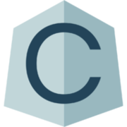

<div class="cf-modal-container" *ngIf="visible">
    <div class="cf-modal-popup">
        <div class="cf-modal-popup-inner">
            <div class="cf-modal-popup-img">
                
            </div>
            <div class="cf-modal-popup-text" *ngIf="startMenu">
                <div>
                    <h1>
                        <span>Clariframi.de</span></h1>
                </div>
                <p>Erstelle Dein eigenes Wireframe für Deine kommende App.</p>
                <p>Der Ausdruck Wireframe wird in verschiedenen Bereichen der Informationstechnik verwendet. Übersetzt bedeutet das englische Wort so viel wie „Drahtgerüst“. Anders als ein „Mock-up“ ‒ ein visueller Prototyp ‒ wird der Begriff Wireframe dazu benutzt, einen sehr frühen konzeptionellen Entwurf einer Website oder eines Software-Frontends darzustellen. Dabei spielt die Gestaltung und Funktion noch keine Rolle. Das Augenmerk liegt auf der Anordnung von Elementen und der Benutzerführung.<br> - Wikipedia</p>
                <div class="cf-modal-popup-btn-container">
                    <span class="btn cf-modal-popup-btn-primary" (click)=newProject()>Neues Projekt erstellen</span>
                    <span class="btn cf-modal-popup-btn-primary" (click)="loadProject()">Projekt laden</span>
                </div>
                <p class="cf-credits" (click)=openCredits()>Credits / Informationen</p>
            </div>
            <div class="cf-modal-popup-text" *ngIf="newProjectMenu">
                <p class="cf-bold">Projekt erstellen!</p>
                <p>Wähle für Dein Wireframe ein Seitenverhältnis aus.</p>
                <p>Beispielsweise hat ein iPhone 8 Plus ein Seitenverhältnis von 16:9 im Querformat und 9:16 im Hochformat.</p>
                <div class="form-group">
                    <select name="aspect_ratios" [(ngModel)]="data" class="form-control">
                        <option value="preset" selected disabled>Verhältnis zwischen Höhe : Breite</option>
                        <option *ngFor="let ratio of aspectRatios" [value]="ratio">{{ratio}}</option>
                    </select>
                    <div class="cf-modal-popup-btn-container">
                        <span class="btn cf-modal-popup-btn-primary" (click)=backProject()>Zurück</span>
                        <span class="btn cf-modal-popup-btn-primary" (click)=createProject()>Erstellen</span>
                    </div>
                    <p class="cf-credits" (click)=openCredits()>Credits / Informationen</p>
                </div>
            </div>
            <div class="cf-modal-popup-text" *ngIf="loadProjectMenu">
                <p class="cf-bold">Projekt laden!</p>
                <p>Bestehende Projekte kannst Du hier laden. Alternativ kannst Du auch deine heruntergeladene Datei (XML oder JSON) aus vorherigen Projekten hochladen.</p>
                <div class="cf-modal-popup-btn-container">
                    <span class="btn cf-modal-popup-btn-primary" (click)=backProject()>Zurück</span>
                    <span class="btn cf-modal-popup-btn-primary">Laden</span>
                </div>
                <p class="cf-credits" (click)=openCredits()>Credits / Informationen</p>
            </div>
            <div class="cf-modal-popup-text" *ngIf="credits">
                <p class="cf-bold">Credits</p>
                <p>Diese Webapplikation ist im Rahmen eines Projekts von Studierenden der Technischen Hochschule Mittelhessen im Studiengang Medieninformatik Web und Mobile Anwendung entstanden.</p>
                <p>An dem Projekt waren beteiligt:</p>
                <ul>
                    <li>Andre Krebs</li>
                    <li>Adrian Werner</li>
                    <li>Mika Stamm</li>
                    <li>Noah Stürtz</li>
                    <li>Silas Buchwald</li>
                </ul>
                <div class="cf-modal-popup-btn-container">
                    <span class="btn cf-modal-popup-btn-primary" (click)=backProject()>Zurück</span>
                </div>
            </div>
            <a class="cf-modal-popup-close" (click)=closeModal()>X</a>
        </div>
    </div>
</div>
